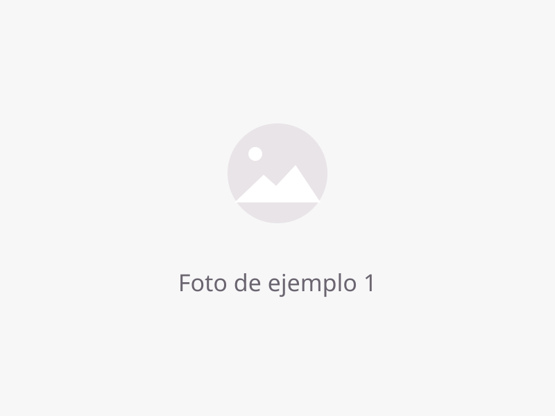
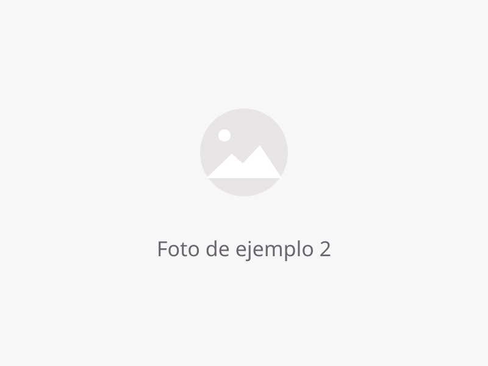
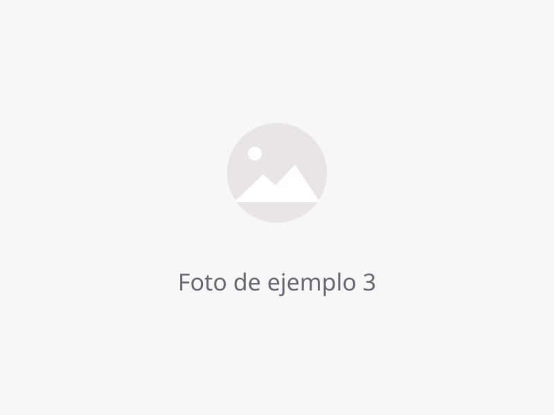

Servicios
Cómo apoyamos a tu estudiante
Texto de ejemplo: párrafo introductorio sobre el enfoque educativo de CIFE.
Tutorías K-12
Texto de ejemplo: descripción del servicio de tutorías — materias cubiertas, grados atendidos, modalidad individual o grupal.
- Texto de ejemplo: materia o beneficio incluido
- Texto de ejemplo: materia o beneficio incluido
- Texto de ejemplo: materia o beneficio incluido

Programa de Homeschooling
Texto de ejemplo: descripción del programa de educación en el hogar — currículo, acompañamiento a padres, registro y documentación.
- Texto de ejemplo: componente del programa
- Texto de ejemplo: componente del programa
- Texto de ejemplo: componente del programa

Preparación académica
Texto de ejemplo: descripción de refuerzo académico, preparación para exámenes y destrezas de estudio.
- Texto de ejemplo: área de preparación
- Texto de ejemplo: área de preparación

¿Interesado en matricular a tu estudiante?
Texto de ejemplo: invitación a comunicarse para orientación sin compromiso.